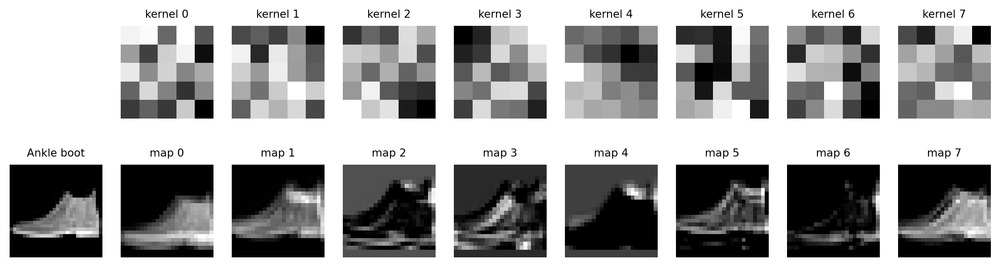

⏱ 60분 · 5주차 실습 2/2 — (5-1) 사진을 (N, C, H, W) 텐서로 만들고 콘볼루션을 직접 계산하기 → 콘볼루션 층으로 옷 사진을 분류하기
🎯 이번 시간의 질문
5-1에서 콘볼루션이 어떤 계산인지 확인했습니다. 이제 그 계산을 층으로 써서 학습시킵니다.
콘볼루션 층은 파라미터가 몇 개이고, 그 층 하나로 옷 사진을 얼마나 맞힐까요?
출력 크기 공식과 파라미터 수를 nn.Conv2d로 검산하고, 콘볼루션 층 하나짜리 신경망으로 옷 사진 열 종류를 분류합니다. 학습 코드는 실습 4와 같고, 손실 함수만 분류용으로 바뀝니다.
이번 시간에 반복할 패턴:(N - K + 2P) // S + 1 · nn.Conv2d의 weight.shape로 파라미터 세기 · 층을 하나씩 통과시키며 모양 찍기 · CrossEntropyLoss와 argmax(1) · 실습 4의 train_one_epoch·evaluate를 분류에 맞게 다시 쓰기.
교수자 메모 (실습본에는 없음). 60분 운영: 준비 3분 → 1절 출력 크기 8분 → 2절 파라미터 수 7분 → 3절 데이터 7분 → 4절 CNN 모양 추적 10분 → 5절 분류 손실·학습·평가 15분 → 📝 과제 10분. ✅ 숫자: (32, 5, 2, 2) → 16 · Conv2d(3→32, k=3) 896 vs Linear(150,528→256) 38,535,424 · 9,600/2,400/10,000 · 배치 (128, 1, 28, 28) · Conv 출력 (1, 8, 24, 24), 펼친 길이 4,608 · 파라미터 208 + 46,090 = 46,298 · 학습 전 정확도 0.15 · 테스트 정확도 약 0.85 · 과제 1 커널 2개 11,582개 약 0.81 · 과제 2 출력 220, Linear 3,872,010.
# ▶ 준비 셀 — 그대로 실행하세요. 옷 사진 데이터를 ToTensor를 붙여 내려받습니다.import numpy as npimport torchimport torch.nn as nnimport matplotlib.pyplot as pltfrom torchvision import datasets, transformsfrom torch.utils.data import Subset, DataLoaderfrom sklearn.model_selection import train_test_splitnp.set_printoptions(linewidth=140)torch.manual_seed(42)tr_full = datasets.FashionMNIST(root='../data', train=True, download=True, transform=transforms.ToTensor())te_full = datasets.FashionMNIST(root='../data', train=False, download=True, transform=transforms.ToTensor())print("준비 완료!")
💬 결과 해설 — 마지막 줄 28×28 입력에 5×5 커널, 패딩 0, 스트라이드 1은 24입니다. 4절의 CNN이 이 설정입니다. nn.Conv2d(1, 1, ...)의 두 숫자는 입력 채널 수와 커널 수입니다.
2. 콘볼루션 층의 파라미터 수
커널 하나의 파라미터는 \(K \times K \times C_{\text{in}}\)개에 편향 1개이고, 커널이 \(M\)개면 \(M\)배입니다. 이론 6장의 비교표 그대로 3×3×3 커널 32개짜리 층과, 5장의 완전연결 첫 층(150,528 → 256)을 만들어 weight.shape를 봅니다.
💬 결과 해설 — 6장 비교표의 두 숫자입니다. 약 4만 배 차이입니다. - weight.shape의 네 축은 5-1의 F.conv2d 커널과 같은 (커널 수, 입력 채널 수, K, K)입니다. - 콘볼루션의 파라미터 수에는 이미지 크기가 들어가지 않습니다. 커널 하나가 모든 위치를 돌아다니며 같은 가중치를 쓰기 때문입니다. 사진이 224×224든 32×32든 896개입니다.
3. 옷 사진 데이터
FashionMNIST 6만 장 중 앞 12,000장만 써서 실습 4처럼 훈련·검증으로 나눕니다. Subset은 데이터셋에서 번호 목록에 해당하는 것만 골라 낸 데이터셋입니다. 테스트는 FashionMNIST가 따로 두는 10,000장을 그대로 씁니다.
💬 결과 해설 — 흑백이므로 채널이 1입니다. 정답은 0~9의 클래스 번호이고, 실습 4의 연비처럼 (128, 1)이 아니라 (128,)입니다. 분류의 정답은 번호 하나이기 때문입니다.
4. 콘볼루션 층 하나짜리 신경망
5×5 커널 8개짜리 콘볼루션 층 뒤에 ReLU를 붙이고, 그 결과를 펼쳐 Linear로 열 클래스의 점수를 냅니다. 1절에서 센 대로 28×28이 콘볼루션을 지나면 24×24이므로, 펼친 길이는 \(8 \times 24 \times 24\)입니다. nn.Flatten은 5-1의 flatten(start_dim=1)을 층으로 만든 것입니다. 한 층씩 통과시키며 모양을 찍습니다.
# ✍️ 직접 입력torch.manual_seed(42)cnn = nn.Sequential( nn.Conv2d(1, 8, kernel_size=5), nn.ReLU(), nn.Flatten(), nn.Linear(8*24*24, 10),)h = torch.zeros(1, 1, 28, 28)for layer in cnn: h = layer(h)print(layer.__class__.__name__, tuple(h.shape))
💬 결과 해설 — 128장 중 맞힌 수가 16장입니다. 이 “맞힌 수 ÷ 전체”가 정확도입니다. 찍어서 맞는 10%와 비슷합니다.
학습 함수는 실습 4의 것과 같습니다. 다시 씁니다.
# ✍️ 직접 입력def train_one_epoch(model, loader, criterion, optimizer): model.train() total =0.0 n =0for xb, yb in loader: optimizer.zero_grad() pred = model(xb) loss = criterion(pred, yb) loss.backward() optimizer.step() total += loss.item() *len(yb) n +=len(yb)return total / n
평가 함수는 실습 4의 것에 맞힌 수를 세는 줄이 더해집니다. 손실과 정확도 두 값을 돌려줍니다. 빈칸을 채웁니다.
# ✍️ 빈칸(___)을 채운 뒤 실행하세요#* def evaluate(model, loader, criterion):#* model.eval()#* total = 0.0#* correct = 0#* n = 0#* with torch.no_grad():#* for xb, yb in loader:#* out = model(xb)#* total += criterion(out, yb).item() * len(yb)#* correct += (___ == yb).sum().item() # 예측 클래스가 정답과 같은 수#* n += len(yb)#* return total / n, correct / n#*#* print(evaluate(cnn, val_loader, criterion))def evaluate(model, loader, criterion): model.eval() total =0.0 correct =0 n =0with torch.no_grad():for xb, yb in loader: out = model(xb) total += criterion(out, yb).item() *len(yb) correct += (out.argmax(1) == yb).sum().item() n +=len(yb)return total / n, correct / nprint(evaluate(cnn, val_loader, criterion))
💬 결과 해설 — 검증 손실이 약 0.59에서 0.40으로 내려가고, 정확도는 약 0.78에서 0.86으로 올라갑니다. 학습 코드는 실습 3·4의 다섯 줄 그대로이고, 입력의 모양만 표에서 이미지로 바뀌었습니다.
테스트 세트로 한 번 평가합니다.
# ✍️ 직접 입력test_loss, test_acc = evaluate(cnn, test_loader, criterion)print(test_acc)
0.8515
✅ 체크포인트 — 약 0.85면 맞습니다. 콘볼루션 층 하나로 열 종류의 옷을 열에 여덟 이상 맞힙니다.
커널 8개의 값은 사람이 정한 것이 아니라 학습으로 얻은 것입니다. 첫 층의 가중치를 꺼내 그림으로 보고, 사진 한 장을 통과시켜 각 커널이 어디에 반응하는지 봅니다.
# ▶ 그대로 실행하세요 — 학습된 커널 8개와 특성 맵 8장kernels = cnn[0].weight.detach().numpy()sample, sample_label = te_full[0]with torch.no_grad(): fmaps = torch.relu(cnn[0](sample.unsqueeze(0)))[0].numpy()fig, axes = plt.subplots(2, 9, figsize=(13, 3.4))axes[0, 0].axis('off')axes[1, 0].imshow(sample[0], cmap='gray')axes[1, 0].set_title(te_full.classes[sample_label], fontsize=8)for i inrange(8): axes[0, i +1].imshow(kernels[i, 0], cmap='gray') axes[0, i +1].set_title(f'kernel {i}', fontsize=8) axes[1, i +1].imshow(fmaps[i], cmap='gray') axes[1, i +1].set_title(f'map {i}', fontsize=8)for ax in axes.flat: ax.axis('off')plt.show()

💬 윗줄이 커널, 아랫줄이 그 커널을 통과한 특성 맵입니다. 커널마다 밝은 곳이 다릅니다. 어떤 커널은 윤곽에, 어떤 커널은 넓은 면에 반응합니다. 5-1 과제 3의 세로 에지 커널처럼 경계를 잡아내는 값이 데이터만 보고 정해졌습니다.
6. 실습 과제 (10분)
📝 과제 1 · 커널이 2개뿐이면
Conv2d(1, 8, ...)의 커널 수를 2로 바꾼 신경망을 같은 방식으로 8 에폭 학습시켜 테스트 정확도를 봅니다. 파라미터 수도 셉니다.
# 📝#> 힌트: 4절의 nn.Sequential을 그대로 쓰되 Conv2d(1, 2, ...)와 Linear(2 * 24 * 24, 10)으로 바꿉니다. optimizer도 새 모델로 다시 만들고, 5절의 8 에폭 반복문과 evaluate(…, test_loader, …)를 그대로 씁니다. 파라미터는 5*5*1*2+2 + 2*24*24*10+10입니다.torch.manual_seed(42)cnn2 = nn.Sequential( nn.Conv2d(1, 2, kernel_size=5), nn.ReLU(), nn.Flatten(), nn.Linear(2*24*24, 10),)optimizer = torch.optim.Adam(cnn2.parameters(), lr=0.001)for epoch inrange(8): train_one_epoch(cnn2, train_loader, criterion, optimizer)print(5*5*1*2+2+2*24*24*10+10, evaluate(cnn2, test_loader, criterion)[1])
11582 0.806
커널 수
파라미터 수
테스트 정확도
2
✏️
✏️
8
46,298
0.85
예시 답: 파라미터 11,582개, 테스트 정확도 약 0.81. 커널이 2개면 찾을 수 있는 특성이 두 가지뿐이라 정확도가 내려갑니다. 커널 수는 “몇 가지 특성을 찾을 것인가”를 정하는 하이퍼파라미터입니다.
📝 과제 2 · 사진이 224×224가 되면
4절의 신경망에 224×224 흑백 사진을 넣는다고 합시다. 콘볼루션 출력의 한 변, 펼친 길이, Linear(→10)의 파라미터 수를 1절의 out_size와 공식으로 계산합니다. 콘볼루션 층의 파라미터는 몇 개인지도 적습니다.
# 📝#> 힌트: 한 변은 out_size(224, 5, 0, 1)입니다. 펼친 길이는 8 * 한 변 * 한 변, Linear는 펼친 길이 * 10 + 10입니다. 콘볼루션 층은 4절과 같은 208개입니다.side = out_size(224, 5, 0, 1)print(side, 8* side * side, 8* side * side *10+10)
220 387200 3872010
입력
콘볼루션 파라미터
콘볼루션 출력 한 변
펼친 길이
Linear 파라미터
28×28
208
24
4,608
46,090
224×224
✏️
✏️
✏️
✏️
예시 답: 콘볼루션 208개(그대로), 한 변 220, 펼친 길이 387,200, Linear 3,872,010개. 콘볼루션 층은 사진 크기와 무관하지만 펼쳐서 넣는 Linear는 사진과 함께 커집니다.
📝 과제 3 · 생각해 보기
과제 2에서 콘볼루션 층은 208개 그대로인데 신경망 전체는 400만 개 가까이 커졌습니다. 어느 층 때문이고, 그 층에 들어가는 것을 줄이려면 콘볼루션 출력에 무엇을 해야 할까요? 한두 문장으로 적습니다.
✏️ 나의 답:
예시 답: 펼친 특성 맵을 받는 Linear 때문입니다. Linear에 들어가는 길이를 줄이려면 콘볼루션 출력의 높이와 너비를 줄여야 하고, 그것이 다음 실습의 풀링입니다.